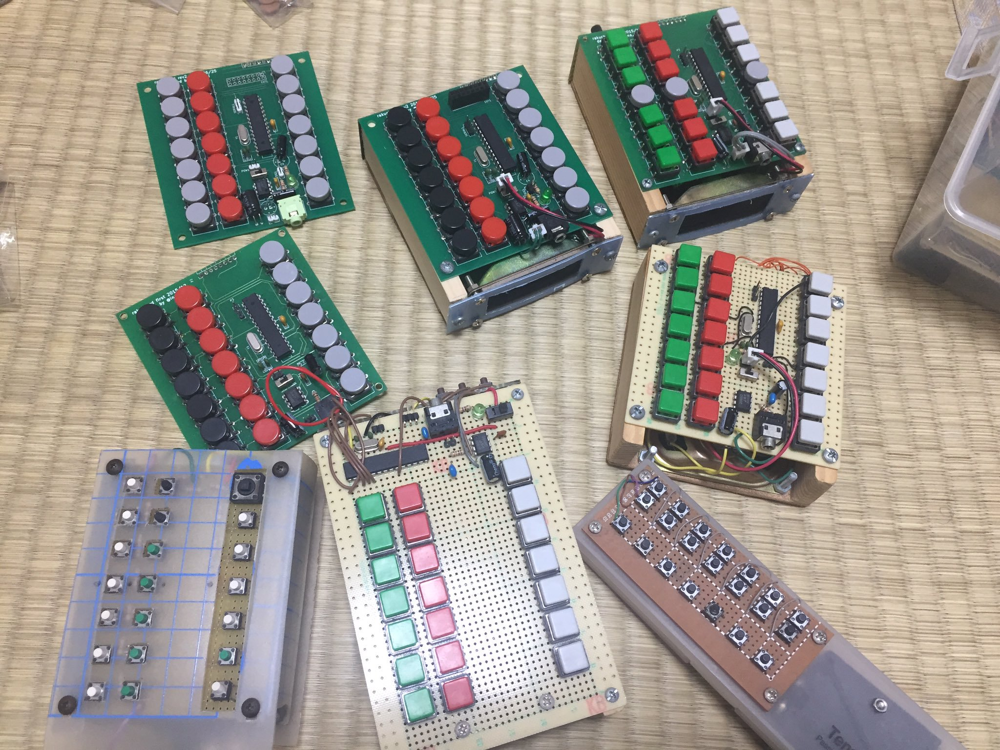
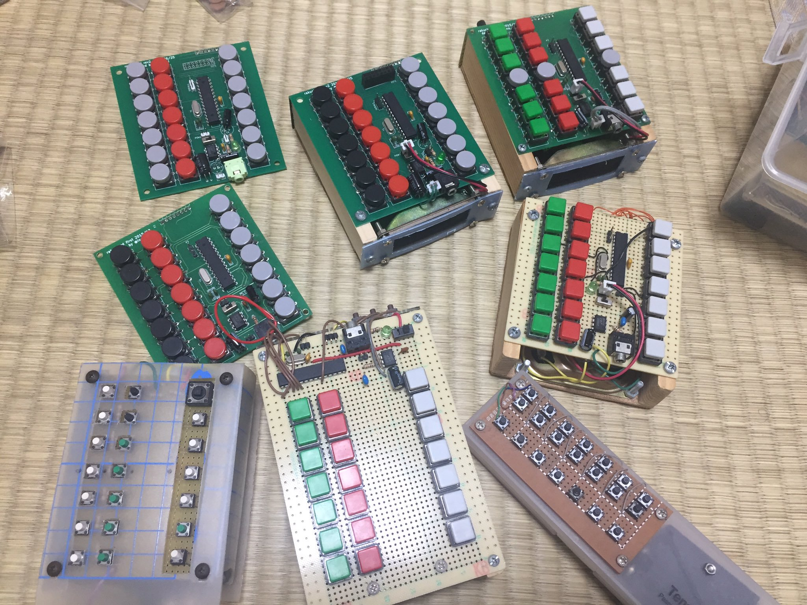

2枚目のアルバム制作の合間にコソコソ練習して、なんとか出来た！
— 谷 瑠美 (@RumiTani) 2018年6月4日
変わった楽器(・ω・)ノ
・#今日はここまで #世界に一つだけの花 #楽器演奏 #RakuChord pic.twitter.com/SVDCi5e6Wh
@ina_ani さんのRakuChordを使って、妻( @suilab_mochi )にXの紅を弾いてもらいました😁
— けん@すいラボ🍜 (@suilab_ken) August 6, 2018
妻が言うには紅は比較的弾きやすいということで、オススメだそうですよ👍
紅だー！！！ pic.twitter.com/HrXpfkt7af
## ロードマップ （ロードマップは将来変更される可能性があります） - [x] v1.4のキットの販売 ## 開発状況 - 2020/11 v1.4キットの通販開始 - 2019/09 v1.3キットの通販開始(完売！) - 2019/03 キットの通販を開始(即完売！) - 2019/02 次期モデルに向けてホームページ更新 - 2018/08 Maker Faire Tokyo 2018 でキット販売 https://inajob.hatenablog.jp/entry/2018/08/06/Maker_Faire_Tokyo_2018%E3%81%A7%E3%81%AERakuChord%E3%82%AD%E3%83%83%E3%83%88%E8%B2%A9%E5%A3%B2%E3%81%B8%E3%81%AE%E9%81%93%E3%81%AE%E3%82%8A - 2017/11 Maker Faire 深センに出展 http://inajob.hatenablog.jp/entry/2017/11/15/%E6%B7%B1%E3%82%BB%E3%83%B3%E3%81%AB%E8%A1%8C%E3%81%A3%E3%81%A6%E3%81%8D%E3%81%BE%E3%81%97%E3%81%9F - 2017/10? 3Dプリンタ筐体の開発 - 2017/08 Maker Faire Tokyo 2017に出展 https://twitter.com/ina_ani/statuses/893669017050767360 - 2017/02 基板発注（上側基板） - 2016/08 Maker Faire Tokyo 2016に出展 http://inajob.hatenablog.jp/entries/2016/08/28#1472362805 - 2016/03 基板発注(本体基板) http://inajob.hatenablog.jp/entry/20160312 - 2015/02 木製のケース作成 - 2014/04 RakuChord for WEB作成（現在非公開 デモ動画あり） http://inajob.hatenablog.jp/entry/20140419 - 2013/11 Maker Faire Tokyo 2013 出展 http://inajob.hatenablog.jp/entry/20131104 - 2012/12 MTM2012出展 http://inajob.hatenablog.jp/entry/20121202/1354458566 - 2012/10 RakuChord long http://inajob.hatenablog.jp/entry/20121008/1349710882 - 2012/10 RakuChord Mobile3 http://inajob.hatenablog.jp/entry/20121008/1349710881 - 2011 Makeに持ち込む http://inajob.hatenablog.jp/entry/20111205/1323092831 - 2010/04 makegine.jpで紹介された。 http://makezine.jp/blog/2010/04/rakuchord_mobile.html https://makezine.com/2010/04/21/rakuchord-mobile-like-a-pocket-elec/ (English) - 2010 開発開始 http://inajob.hatenablog.jp/entry/20100123/1264249970 ## 作った人 - @ina_ani Follow @ina_ani - blog http://inajob.hatenablog.jp/ - 作ったもの一覧 https://inajob.github.io/intro/index.html ## 記事 - [2019/03/24 RakuChord(らくこーど)の値付けなど”ここだけの話”について](https://note.mu/ina_ani/n/na890efa0d079) - [2019/03/23 RakuChord(らくこーど)販売の後日談](https://inajob.hatenablog.jp/entry/2019/03/23/RakuChord-after-talk) - [2019/03/17 自作電子楽器RakuChord(らくこーど)の通販までの道のり](https://inajob.hatenablog.jp/entry/rakuchord-e-commerce) ## 2019/09モデル アーカイブ 2019/09月に通販した v1.3の資料です。 組み立て説明 ## 2019/03モデル アーカイブ 2019/03月に通販したものです。 組み立て説明 ## 2018モデル アーカイブ MakerFaireTokyo2018で頒布したものですRakuChord（らくこーど）完成。さっそく遊んでみた。完成後3分くらい練習しての撮影なのでまだまだ拙いけどめちゃくちゃ楽しい！！ pic.twitter.com/IBQY7Jgw3a
— コミネ(ちゃぼ) (@komine) March 17, 2019
 
組み立て説明

組み立て説明